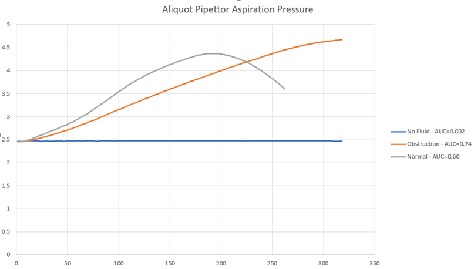
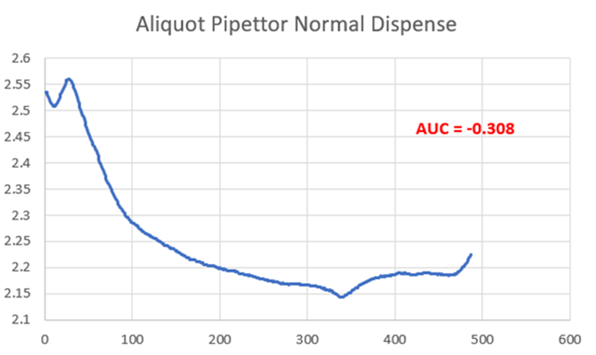

Troubleshooting the APO Aliquot Pipettor Obstruction (High Pressure) Flag
If the system displays the APO flag, the aliquot sample pipettor pressure monitoring system detected an obstruction when aliquoting a sample during aspiration or dispense.
Be sure the sample has been properly prepared (not frozen, not coagulated, etc.).
Be sure the system correctly identified the container type:
In the Console App go to
Samples to open the Sample Events page.
In the Sample ID column, select the sample ID for the sample to open a page with more information about the sample.
In the Processing Details column select
View to open the result details page. The Sample Container Type will be displayed in the Reaction Details portion of page.
Be sure the aliquot pipettor is perpendicular and aligned to the sample processing unit and to the inner and outer sample wheel. See
Aligning the Aliquot Sample Pipettor for more information.
Be sure the tubing to the aliquot pipettor syringe is not damaged or kinked.
Be sure the aliquot pipettor pressure sensor is connected and operational.
Replace the following parts, one at a time, in the following order, and test to see whether replacement resolves the issue:
Pipettor mandrel
Small tubing between the pipettor mandrel and the syringe
Pressure sensor
Sample pump/syringe
Analyzing the Related Log Files
Obtain copies of the related Process Monitoring log files from both the
Pass and
Fail folders in
D:\ProgramData\Beckman Coulter\Logs\Falcon Process Monitoring\
In the
Fail folder, use Microsoft Excel to open the newest log file that includes AliquotSamplePipettor in the filename. Take note about whether the operation was aspiration or dispense, and note the assay, sample type, and volume.
Plot column C (pressure trace).
Compare cell AB (AUC) with cells AE and AF (threshold limit)
Aspiration (obstruction)
AUC > UT
Aspiration (no fluid)
AUC > LT
Dispense (obstruction)
AUC < UT
Dispense (no fluid)
AUC > LT
Select the table of pressure data and insert a line chart into the sheet.
Figure 385: Aliquot Sample Pipettor Aspiration Pressure (examples)

During aspiration, pressure in the aliquot pipettor will gradually increase then decrease. An obstruction will cause the pressure to only increase, and if there is no fluid, little or no pressure will be recorded.
Figure 386:

During dispense, pressure within the aliquot pipettor will gradually decrease and then slightly increase.